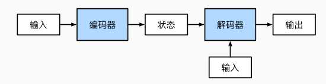
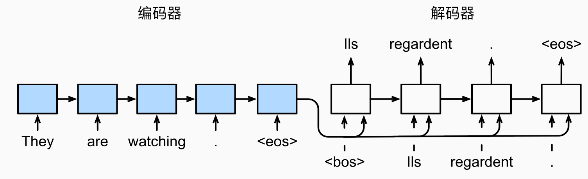
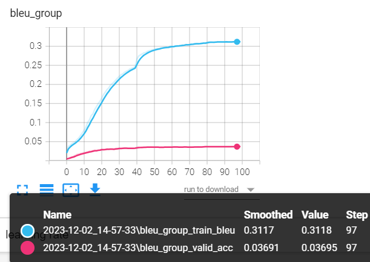

9.3 机器翻译-Seq2Seq
前言
上一节通过影评数据分类任务介绍了seq2cls的场景，本节介绍seq2seq的任务——机器翻译。
机器翻译是典型的seq2seq任务，本节将采用传统基于RNN的seq2seq结构模型进行，seq2seq任务有一些特点，并且需要重点理解，包括
- 特殊token：
, , , 。分别表示起始、结束、未知和填充。尤其是“起始”和"结束"，它们是序列生成任务中重要的概念。 - 序列最大长度：序列最大长度直接影响模型性能，过长导致模型难以学习，过短导致无法完成任务，本案例选择长度为20。
- Teacher forcing 教师强制学习：本概念也是序列生成任务中，在训练阶段所涉及的重要概念，表示decoder的输入采用标签，而非自回归式。
- 推理代码逻辑：模型推理输出序列时，采用的是自回归方式，因而代码与训练时要做修改。
任务介绍
机器翻译是经典的seq2seq任务，日常生活中也常用到翻译工具，因此任务比较好理解。例如以下几个句子就是本节要处理的任务。
- That mountain is easy to climb. 那座山很容易爬。
- It's too soon. 太早了。
- Japan is smaller than Canada. 日本比加拿大小。
现在需要构建模型，接收英文句子序列，进行综合理解，然后输出中文句子序列，在神经网络中，通常采用encoder-decoder架构，例如《动手学》中的示意图。

- 编码器，对输入进行处理，获得对输入句子的综合理解信息——状态。
- 解码器，根据状态，以及解码器的输入，逐个token的生成输出，直到输出特殊token——，模型停止输出。
- 解码器的输入，采用自回归方式（推理时），含义是当前时刻的输入，来自上一时刻的输出，特别地，第0个时刻，是没有上一个时刻，所以采用特殊token——作为输入。
数据模块
数据下载
本案例数据集Tatoeba下载自https://www.manythings.org/anki/，该项目是帮助不同语言的人学习英语，因此是英语与其它几十种语言的翻译文本。
其中就包括本案例使用的英中文本，共计29668条（Mandarin Chinese - English cmn-eng.zip (29668)）
数据以txt形式存储，一行是一对翻译文本，例如长这样：
1.That mountain is easy to climb. 那座山很容易爬。
2.It's too soon. 太早了。
3.Japan is smaller than Canada. 日本比加拿大小。
数据集划分
对于29668条数据进行8:2划分为训练、验证，这里采用配套代码a_data_split.py进行划分，即可在统计目录下获得train.txt和text.txt。
词表构建
文本任务首要任务是为文本构建词表，这里采用与上节一样的方法，首先对文本进行分词，然后统计语料库中所有的词，最后根据最大上限、最小词频等约束，构建词表。本部分配套代码是b_gen_vocabulary.py
词表的构建过程中，涉及两个知识点：中文分词和特殊token。
1. 中文分词
对于英文，分词可以直接采用空格。而对于中文，就需要用特定的分词方法，这里采用的是jieba分词工具，以下是英文和中文的分词代码。
source.append(parts[0].split(' '))
target.append(list(jieba.cut(parts[1]))) # 分词
2. 特殊token
由于seq2seq任务的特殊性，在解码器部分，通常需要一个token告诉模型，现在是开始，同时还需要有个token让模型输出，以此告诉人类，模型输出完毕，不要再继续生成了。
因此相较于文本分类，还多了，
PAD_TAG = "<pad>" # 用PAD补全句子长度
BOS_TAG = "<bos>" # 用BOS表示开始
EOS_TAG = "<eos>" # 用EOS表示结束
UNK_TAG = "<unk>" # 用EOS表示结束
PAD = 0 # PAD字符对应的数字
BOS = 1 # BOS字符对应的数字
EOS = 2 # EOS字符对应的数字
UNK = 3 # UNK字符对应的数字
运行代码后，词表字典保存到了result目录下，并得到如下输出，表明英文中有2518个词，中文有3365，但经过最大长度3000的截断后，只剩下2996，另外4个是特殊token。
100%|██████████| 23635/23635 [00:00<00:00, 732978.24it/s]
原始词表长度:2518，截断后长度:2518
2522
保存词频统计图:vocab_en.npy_word_freq.jpg
100%|██████████| 23635/23635 [00:00<00:00, 587040.62it/s]
保存统计图:vocab_en.npy_length_freq.jpg
原始词表长度:3365，截断后长度:2996
3000
Dataset编写
NMTDataset的编写逻辑与上一小节的Dataset类似，首先在类初始化的时候加载原始数据，并进行分词；在getitem迭代时，再进行token转index操作，这里会涉及增加结束符、填充符、未知符。
核心代码如下：
def __init__(self, path_txt, vocab_path_en, vocab_path_fra, max_len=32):
self.path_txt = path_txt
self.vocab_path_en = vocab_path_en
self.vocab_path_fra = vocab_path_fra
self.max_len = max_len
self.word2index = WordToIndex()
self._init_vocab()
self._get_file_info()
def __getitem__(self, item):
# 获取切分好的句子list，一个元素是一个词
sentence_src, sentence_trg = self.source_list[item], self.target_list[item]
# 进行填充， 增加结束符，索引转换
token_idx_src = self.word2index.encode(sentence_src, self.vocab_en, self.max_len)
token_idx_trg = self.word2index.encode(sentence_trg, self.vocab_fra, self.max_len)
str_len, trg_len = len(sentence_src) + 1, len(sentence_trg) + 1 # 有效长度， +1是填充的结束符 <eos>.
return np.array(token_idx_src, dtype=np.int64), str_len, np.array(token_idx_trg, dtype=np.int64), trg_len
def _get_file_info(self):
text_raw = read_data_nmt(self.path_txt)
text_clean = text_preprocess(text_raw)
self.source_list, self.target_list = text_split(text_clean)
模型模块
seq2seq模型，由编码器和解码器两部分构成。
对于编码器，需要的是其对输入句子的全文理解，因此可采用RNN中输出的hidden state特征来表示，在这里均采用LSTM作为基础模型。
对于解码器，同样是一个LSTM，它接收3个数据，一个是输入，另外两个是hidden state和cell state。解码器的输入就是自回归式的，上一时刻输出的单词传到当前时刻。
这里借助《动手学》的示意图，理解seq2seq模型的样子。

首先构建一个EncoderLSTM，这个比较简单，只看它的forward，对于输入的句子x，输出hidden_state, cell_state。
def forward(self, x):
# Shape -----------> (26, 32, 300) [Sequence_length , batch_size , embedding dims]
embedding = self.dropout(self.embedding(x))
# Shape --> outputs (26, 32, 1024) [Sequence_length , batch_size , hidden_size]
# Shape --> (hs, cs) (2, 32, 1024) , (2, 32, 1024) [num_layers, batch_size, hidden_size]
outputs, (hidden_state, cell_state) = self.LSTM(embedding)
return hidden_state, cell_state
然后构建一个DecoderLSTM，解码器除了需要对数据进行提特征，获得hidden_state, cell_state，还需要进行当前时刻，单词的输出，即token级的分类任务。
所以，它的forward返回有三个信息，包括输出的token预测向量，LSTM的hidden_state, cell_state，这里需要注意，在代码实现时，解码器输出的隐状态默认包括了来自编码器的，因此后续时间步不再需要从编码器拿隐状态特征了。更直观的就是，解码器返回的hidden_state, cell_state，会是下一次forward输入的hidden_state, cell_state。
def forward(self, x, hidden_state, cell_state):
x = x.unsqueeze(0) # x.shape == [1, batch_size]
embedding = self.dropout(self.embedding(x))
outputs, (hidden_state, cell_state) = self.LSTM(embedding, (hidden_state, cell_state))
predictions = self.fc(outputs)
predictions = predictions.squeeze(0)
return predictions, hidden_state, cell_state
最后，编写一个Seq2Seq类，将编码器和解码器有序的组合起来，在这里，核心任务是解码器中，如何有序的进行每个时刻的数据处理。
该Seq2Seq类用于训练阶段，会设计teacher forcing（强制学习）的概念，它表示在训练阶段，解码器的输入时自回归，还是根据标签进行输入，采用标签进行输入的方法称为teacher forcing。
这里仔细研究一下forward的后半部分——解码器部分，前半部分就是编码器进行一次性的编码，获得隐状态特征。
对于解码器，采用for循环，依次进行token输出，最终存储在outputs中，for循环需要设置最大步数，一般根据任务的数据长度而定，这里设置为32。
接着，解码器工作，解码器会输出：预测的token分类向量，隐状态信息，其中隐状态信息会在下一个for循环时，输入到解码器中。
再往下看，解码器的输入x，则是根据一个条件判断，以一定的概率采用标签，一定的概率采用自回归方式。这里概率通常设置为0.5，如果设置为1，表明采用强制学习，永远采用标签作为输入，也就是强制学习机制（teacher forcing）。
# Shape of x (32 elements)
x = target[0] # <bos> token
for i in range(1, target_len):
# output.shape == (bs, vocab_length)
# hidden_state.shape == [num_layers, batch_size size, hidden_size]
output, hidden_state, cell_state = self.Decoder_LSTM(x, hidden_state, cell_state)
outputs[i] = output
best_guess = output.argmax(1) # 0th dimension is batch size, 1st dimension is word embedding
x = target[i] if random.random() < tfr else best_guess # Either pass the next word correctly from the dataset or use the earlier predicted word
# Shape --> outputs (14, 32, 5766)
return outputs
模型训练
数据和模型准备好之后，可以运行train_seq2seq.py进行训练，seq2seq的训练还有些许不同，主要包括：
- 采用blue进行指标评价；
- 损失函数加入ignore_index
BLEU是IBM在2002提出的，用于机器翻译任务的评价，发表在ACL，引用次数10000+，原文题目是“BLEU: a Method for Automatic Evaluation of Machine Translation”。
它的总体思想就是准确率，假如给定标准译文reference，模型生成的句子是candidate，句子长度为n，candidate中有m个单词出现在reference，m/n就是bleu的1-gram的计算公式。
当统计不再是一个单词，而是连续的N个单词时，就有了n-gram的概念，词组的概念称为n-gram，词组长度通常选择1, 2, 3, 4
举一个例子来看看实际的计算：
candinate: the cat sat on the mat
reference: the cat is on the mat
BLEU-1： 5/6 = 0.83
BLEU-2: 3/5 = 0.6
BLEU-3: 1/4 = 0.25
BLEU-4: 0/3 = 0
分子表示candidate中预测到了的词组的次数，如BLEU-1中，5分别表示, the, cat, on, the, mat预测中了。BLEU-2中，3分别表示, the cat, on the, the mat预测中了。以此类推。
针对BLEU还有些改进计算方法，可参考BLEU详解
由于句子长度不一致，而训练又需要将数据构造成统一长度的句子来组batch，因此会加入很多特殊token——，对应的index是0，所以会在计算损失函数的时候，这部分的loss是不计算的，可以巧妙的通过设置ignore_index来实现。 nn.CrossEntropyLoss(ignore_index=0)

由于数据量少，以及模型参数未精心设计，模型存在过拟合，这里仅作为seq2seq任务的学习和理解，不对模型性能做进一步提升，因为后续有更强大的解决方案——基于Transformer。
模型推理
运行配套代码c_inference.py，可以看到模型的表现如下所示，整体上像一个模型翻译的样子，但效果远不如意，这里包含多方面原因。
数据量过少，训练数据仅2万多条，而中英文的词表就3000多
模型过于简单，传统RNN构建的seq2seq在上下文理解能力上表现欠佳，后续可加入注意力机制，或是基于Transformer架构来提升。
输入: he didn't answer the phone , so i sent him an email . <eos> 标签:他 没有 <unk> ， 所以 我 给 他 发 了 <unk> <unk> 。 <eos> 翻译:我 不 <unk> ， 所以 我 他 他 他 <unk> 。 <eos> 输入: just as he was going out , there was a great earthquake . <eos> 标签:就 在 他 要 出門 的 時候 ， 發生 了 <unk> 。 <eos> 翻译:他 他 的 <unk> <unk> ， 但 他 <unk> <unk> 。 <eos> 输入: tom hugged mary . <eos> 标签:汤姆 拥抱 了 玛丽 。 <eos> 翻译:<unk> 了 玛丽 。 <eos> 输入: there are many americans who can speak japanese . <eos> 标签:有 很多 美国 <unk> 说 日语 。 <eos> 翻译:有 <unk> <unk> 能 非常 <unk> 。 <eos> 输入: i'm not good at <unk> . <eos> 标签:我 不 擅長 <unk> 。 <eos> 翻译:我 不 太 擅长 运动 。 <eos>小结
本节通过机器翻译了解seq2seq任务，主要涉及一些特殊的、新的知识点，包括：
特殊token：解码器需要两个特殊的token，起始token和结束token，用于控制生成序列的起始和结束。
强制学习：训练时，解码器的输入采用标签
编码器-解码器的自回归推理逻辑：需要for循环的形式，串行的依次生成句子中的每个单词
中文分词工具jieba